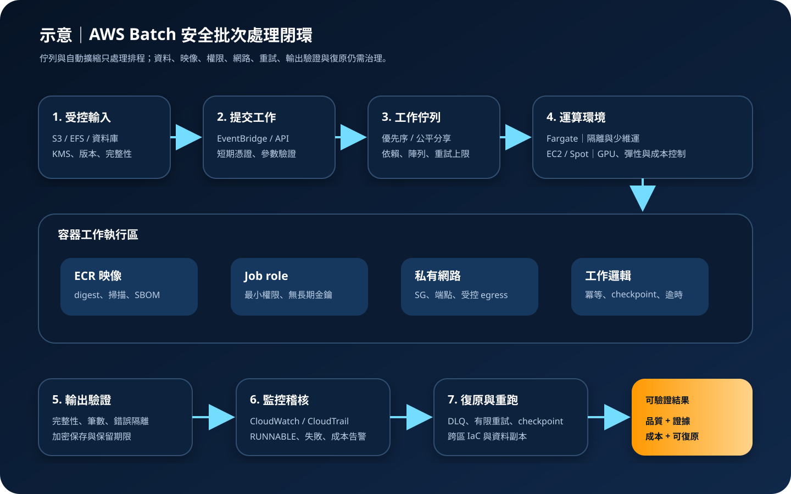

AWS Batch：容器批次運算、排程與安全治理
AWS Batch 是用來提交、排程與執行容器化批次工作及支援服務工作的全受管服務。容器工作可依需求使用 AWS Fargate、Amazon EC2、Spot、Amazon ECS Managed Instances 或 Amazon EKS 等運算選項，但服務不會代替資料分類、供應鏈、工作權限、輸出驗證、失敗處理、成本上限與跨區復原責任。
作者：Dr. William｜查閱與發布：2026-10-08
服務定位
AWS Batch 適合沒有持續互動請求、可排隊等待並以工作單位完成的運算，例如媒體轉檔、科學模擬、財務計算、基因分析、資料轉換、渲染與機器學習前後處理。AWS Batch 可使用 ECS、EKS 與支援服務環境；本文聚焦最常見的容器批次工作。團隊提供映像、資源需求與執行規則，AWS Batch 管理工作佇列、排程器及運算容量整合。
AWS Batch 不是工作流程業務引擎、資料品質平台或自動災難復原服務。排程器能把工作送到可用容量，卻不知道輸入是否完整、輸出是否正確、重跑是否會重複扣款、容器是否可信，或結果是否符合監管要求。這些控制須由工作設計、IAM、網路、KMS、監控與復原流程共同完成。
核心概念與服務邊界
工作與排程
- Job definition：描述容器映像、vCPU、記憶體、job role、execution role、環境變數、secret、逾時、重試與平台能力；修訂版本須受控。
- Job：一次實際執行，可覆寫核准的參數與資源需求；提交者不應能任意替換映像、角色或敏感設定。
- Job queue：工作等待區，可設定優先序並連接一個或多個運算環境；正式、測試與高敏感工作應分流。
- Scheduler：評估工作狀態、依賴、優先序、資源與運算環境，把可執行工作放到容量上。
- Fair-share scheduling：在多租戶共用佇列中依 share identifier 與政策分配資源，避免單一使用者長期壟斷容量。
- Array 與 multi-node parallel jobs：前者適合大量相似工作，後者適合需要多節點協同的 HPC；兩者都須控制失敗傳播與重跑成本。
運算、儲存與觀測
- Managed compute environment：AWS Batch 依設定管理 Fargate 或 EC2 容量；客戶仍決定 instance type、Spot、網路、映像與擴縮邊界。
- Fargate：減少主機維運，適合支援的 Linux／ARM 資源組合與隔離需求；GPU、多節點及部分特殊能力需比較 EC2。
- EC2／Spot：支援較廣實例、GPU、客製 AMI 與較深效能控制；Spot 中斷、主機修補、容量與 AMI 生命週期須納入設計。
- ECS Managed Instances／EKS：可在適用區域與平台需求下使用其他受支援運算環境；既有 Kubernetes 治理、節點邊界、Pod 權限與相容限制仍須評估。
- Amazon ECR：保存工作映像；部署應固定 image digest、執行掃描並限制 repository 與跨帳戶拉取。
- S3、EFS 與資料庫：通常保存輸入、checkpoint 與輸出；AWS Batch 不會自動驗證物件完整性、交易一致性與保留規則。
- CloudWatch 與 CloudTrail：CloudWatch 收集工作日誌及指標，CloudTrail 記錄 Batch 控制面 API；容器內業務事件仍需應用自行記錄。
適合與不適合的使用情境
適合
- 工作可非同步執行，能明確定義輸入、輸出、逾時、重試與完成條件。
- 工作量尖峰差異大，希望依佇列需求自動取得 Fargate、EC2 或 Spot 容量。
- 同一容器程式需以不同參數大量平行執行，並以 array job 或依賴關係管理。
- 需要 GPU、記憶體最佳化、運算最佳化或 Spot 等不同容量組合。
- 組織已能治理 ECR、IAM、VPC、KMS、S3、CloudWatch、CloudTrail 與容器弱點。
不適合或不能單獨完成
- 低延遲互動式 API、長時間連線或必須立即回應的交易流程。
- 工作無法安全重試，且沒有冪等鍵、checkpoint、輸出版本或補償交易。
- 需要複雜的人工作業、長期事件編排與業務狀態管理，卻把佇列依賴當成完整工作流程引擎。
- 未建立容器映像、套件、資料來源與輸出品質治理，只希望服務自動保證結果可信。
- 工作固定且極小，建立 Batch、ECR、網路端點、日誌與治理的總成本高於簡單排程方案。
示意故事案例：大量影像轉檔與品質驗證
以下為示意案例，不代表特定企業或正式部署。 一家內容平台每天收到大量已授權的原始影片，需要產生多種解析度、預覽圖與技術檢查報告。上傳完成事件先寫入不可變更的工作清單，記錄來源物件版本、雜湊、租戶、用途與保留期限，再由 EventBridge 觸發提交 AWS Batch array job。
工作佇列分為正式與重處理兩類。容器映像來自私有 ECR，部署固定 digest 並完成弱點掃描；每個工作使用僅能讀取指定輸入 prefix、寫入指定暫存 prefix 與讀取必要 KMS key 的 job role。工作在私有 subnet 執行，透過 VPC endpoint 存取 ECR、S3、CloudWatch 與必要 AWS API，不配置不受控網際網路出口。轉檔程式以輸入版本和輸出規格建立冪等鍵，定期寫入 checkpoint，Spot 中斷或暫時錯誤只能有限重試。
完成後，驗證工作檢查輸出數量、編碼、時長、音軌、解析度與 checksum；只有全部通過才把結果移到發布區。錯誤工作進入隔離清單，不以無限重試掩蓋資料問題。CloudWatch 監控長時間 RUNNABLE、失敗率、執行時間、Spot 中斷與成本，CloudTrail 保存提交、取消、更新佇列和角色變更紀錄。第二區域保存 IaC、核准映像與必要資料副本，並定期演練重新建置。

建置與運作流程
- 定義工作契約：記錄輸入 schema、來源、版本、輸出、完成條件、可接受錯誤、最大執行時間、RTO、RPO 與資料保留。
- 選擇運算模式：依 vCPU、記憶體、GPU、作業系統、啟動時間、隔離、Spot 容忍度與維運能力比較 Fargate 與 EC2。
- 建立帳戶與環境邊界：分開開發、測試與正式帳戶或權限；高敏感工作使用獨立 queue、compute environment、subnet 與 KMS key。
- 建置可信映像：使用最小基底映像，多階段建置，固定套件與映像 digest，產生 SBOM，執行弱點、惡意程式及授權掃描。
- 分離 IAM 角色：人員使用聯合登入、MFA 與短期工作階段；分開 service-linked role、ECS task execution role、job role 與提交角色，限制 PassRole。
- 保護資料與機密：S3、EBS、EFS、日誌及輸出依分類使用 KMS；機密放入 Secrets Manager 或 Parameter Store，不寫入映像、參數明文或日誌。
- 設定私有網路：使用私有 subnet、最小 security group、受控 DNS 與 egress；依需求建立 ECR、S3、CloudWatch Logs、STS、Secrets Manager 與 KMS 端點。
- 建立 job definition：設定核准映像、資源、角色、唯讀根檔案系統可行性、環境變數、secret、timeout、retry strategy 與 log configuration。
- 建立 queue 與排程：依業務重要性分流，設定優先序或 fair-share policy；避免單一租戶、錯誤 array job 或無上限提交耗盡容量。
- 實作冪等與 checkpoint：以輸入版本和工作規格建立唯一鍵，重跑寫入新版本或可安全覆寫的暫存區；長工作保存可驗證 checkpoint。
- 驗證輸出：將運算成功與業務成功分開，檢查筆數、checksum、格式、範圍、異常值與下游契約，再原子化發布結果。
- 建立監控：監控 SUBMITTED、RUNNABLE、STARTING、RUNNING、FAILED 狀態、佇列年齡、執行時間、Spot 中斷、日誌錯誤與成本異常。
- 控制失敗：只對可恢復錯誤有限重試，針對應用錯誤快速失敗；保存失敗輸入、原因與映像版本，建立隔離及人工處理流程。
- 演練復原：以 IaC 重建 queue、compute environment、job definition、IAM、網路、告警與 KMS；驗證第二區域資料、映像與配額。
成本、可用性與維運考量
AWS Batch 本身不另外收取服務費，主要成本來自工作使用的 Fargate、EC2、Spot、ECS Managed Instances、EKS、EBS、EFS、S3、ECR、KMS、CloudWatch Logs、NAT Gateway、PrivateLink、資料傳輸及其他相依服務。正式估算須以查閱當日價格、區域、實例、工作時間、啟動等待、重試率、日誌量、資料量與備援容量計算。
Spot 可降低可中斷工作的運算成本，但必須有 checkpoint、有限重試與混合 instance type；不能把中斷造成的重算、排隊與交付延誤排除在成本之外。Fargate 減少主機管理，EC2 則可提供 GPU、客製 AMI、Savings Plans 或更細容量選擇。應限制最大 vCPU、array size、提交速率、日誌保留與單工作資源，並配置 Budget、Cost Anomaly Detection 與標籤。
多可用區 subnet 與多種 instance type 可降低單一容量池風險，但工作可能因配額、映像拉取、Spot 容量、錯誤資源需求、網路或依賴服務而長期停在 RUNNABLE。AWS Batch 資源是區域性設定，跨區不會自動複製 queue、job definition、ECR 映像、資料、KMS key、IAM、告警與配額；第二區域必須以 IaC、受控複寫和實際演練建立。
AWS Batch 特有資安風險與控制
- 惡意或脆弱映像：只允許核准 ECR repository 與固定 digest，掃描映像、保存 SBOM、阻擋 critical 漏洞與不明基底映像。
- 工作參數注入：對 command、environment、resource override 與輸入 URI 使用 allowlist 和 schema；不得把未信任字串直接交給 shell。
- PassRole 與 job role 提權：限制提交者可傳遞的角色與 job definition，分離 execution role 和 job role，對敏感 API 使用資源與條件限制。
- 機密洩漏：使用 Secrets Manager／Parameter Store 與 KMS，避免把機密放入環境覆寫、映像層、命令列、工作事件或 CloudWatch Logs。
- 共用運算環境越界：敏感租戶分離帳戶、queue 或 compute environment；限制容器 privilege、Linux capability、host mount、device 與 metadata 存取。
- 不受控網路外洩：工作置於私有 subnet，使用 endpoint policy、DNS 與 egress allowlist；沒有業務需求時不配置公有 IP 或廣泛 NAT 出口。
- 資料覆寫與重跑污染：輸入使用版本或不可變識別，輸出先寫暫存位置並驗證後發布；冪等鍵防止重複執行產生雙重效果。
- 無限重試與成本型阻斷：設定 timeout、attempt 上限、退出碼條件、提交配額和最大 vCPU；對非暫時性錯誤快速失敗。
- 佇列飢餓與多租戶壟斷：以分離 queue、優先序、fair-share scheduling、提交限制與容量保留維持公平及重要工作可用性。
- Spot 中斷造成不一致：處理終止訊號、保存 checkpoint、原子化輸出並驗證完成狀態；不可把容器退出碼 0 當作唯一品質證據。
- RUNNABLE 停滯未被發現：監控佇列年齡、資源需求、配額、映像拉取、網路與容量事件；設定告警與事件化診斷流程。
- 稽核覆蓋誤判：CloudTrail 記錄 Batch API，但不會自動記錄容器內每筆資料處理；應用須產生關聯 ID、輸入版本、映像 digest 與結果證據。
- 主機與 AMI 生命週期：EC2 運算環境使用核准、修補與定期汰換的 AMI；避免長期保留過期 ECS agent、核心或驅動程式。
- 不安全跨區切換：不得在災難時改用未核准映像、公開 bucket 或過寬角色；備援區域須具備資料、KMS、配額、網路與監控證據。
共同責任邊界
AWS 負責 AWS Batch 受管排程服務及其責任範圍內的雲端基礎設施安全；採 Fargate 時，AWS 也管理底層主機。客戶負責容器映像、程式碼、資料、job definition、queue、運算環境選型、IAM、網路、KMS、日誌、重試、輸出品質、成本與復原。使用 EC2 運算環境時，客戶還須治理 AMI、instance profile、作業系統、ECS agent、套件與修補生命週期。
客戶須落實 IAM 最小權限、人員 MFA 與工作負載短期憑證、網路隔離與公開存取控制、KMS 加密、Secrets Manager／Parameter Store、CloudTrail／CloudWatch、資料備份及跨區復原。AWS 不會替客戶確認工作輸入是否合法、容器是否可信、重試是否安全、輸出是否正確，或第二區域是否能在目標時間內恢復相同資料和運算能力。
上線前可執行檢查清單
- □ 已記錄工作擁有者、資料擁有者、輸入輸出契約、完成條件、RTO、RPO、逾時與停止條件。
- □ 人員使用聯合登入與 MFA；提交者、Batch 服務、execution role 與 job role 已分離並採最小權限。
- □ iam:PassRole 僅允許指定角色與服務，提交者不能任意替換正式 job definition、映像或角色。
- □ ECR 映像固定 digest，完成弱點、惡意程式與授權掃描，保存 SBOM 與可追溯建置證據。
- □ Job definition 已限制 command、environment、resource override、privilege、mount、device、timeout 與 retry strategy。
- □ 所有工作使用短期憑證；機密存於 Secrets Manager／Parameter Store，未出現在映像、參數、命令列或日誌。
- □ S3、EBS、EFS、ECR 與 CloudWatch Logs 依分類使用 KMS，key policy、grant、輪替與第二區域策略已驗證。
- □ 工作位於私有 subnet，security group、VPC endpoint、endpoint policy、DNS 與 egress 路徑已實測。
- □ 正式、測試、重處理與高敏感工作已適當分離 queue、compute environment、帳戶或權限邊界。
- □ 輸入物件有版本、checksum 或不可變識別，工作具有冪等鍵、checkpoint 與安全重跑設計。
- □ Array job、依賴、優先序與 fair-share policy 已測試，單一租戶無法耗盡全部容量。
- □ Spot 工作能處理中斷並保存 checkpoint；未完成輸出不會被誤標為正式結果。
- □ 輸出另有筆數、格式、checksum、範圍與業務規則驗證，運算成功不等同資料正確。
- □ Retry 只涵蓋暫時性錯誤，已設定 attempt、timeout、最大 vCPU、提交速率與隔離流程。
- □ CloudWatch 已監控佇列年齡、RUNNABLE、STARTING、FAILED、執行時間、Spot 中斷、日誌與成本。
- □ CloudTrail 已建立持續 trail，Batch、IAM、ECR、KMS、S3 與網路變更能關聯到工作證據。
- □ EC2 運算環境的 AMI、ECS agent、核心、驅動與修補生命週期已有負責人；或已選擇 Fargate 降低此範圍。
- □ Budget、Cost Anomaly Detection、標籤、日誌保留與閒置資源清理已設定。
- □ 第二區域的 IaC、ECR 映像、資料、IAM、KMS、網路、配額、queue、job definition 與告警已重建演練。
AWS 官方一手來源
- What is AWS Batch?（查閱：2026-10-08）
- AWS Batch job definitions（查閱：2026-10-08）
- Job queues（查閱：2026-10-08）
- Compute environments（查閱：2026-10-08）
- Compute environment types（查閱：2026-10-08）
- AWS Batch on AWS Fargate（查閱：2026-10-08）
- Fair-share scheduling policies（查閱：2026-10-08）
- Array jobs（查閱：2026-10-08）
- Multi-node parallel jobs（查閱：2026-10-08）
- Security in AWS Batch（查閱：2026-10-08）
- How AWS Batch works with IAM（查閱：2026-10-08）
- IAM roles for AWS Batch（查閱：2026-10-08）
- Monitoring AWS Batch with CloudWatch（查閱：2026-10-08）
- Logging AWS Batch API calls with CloudTrail（查閱：2026-10-08）
- Access AWS Batch using an interface endpoint（查閱：2026-10-08）
- AWS Batch best practices（查閱：2026-10-08）
- AWS Batch Pricing（查閱：2026-10-08）
- AWS Well-Architected Security Pillar｜Shared responsibility（查閱：2026-10-08）
內容說明
本文依查閱日可用的 AWS 官方文件整理，作為基礎學習與架構討論材料；實際部署仍須依最新區域、平台能力、Fargate 與 EC2 限制、instance type、Spot 容量、配額、價格、資料分類、容器風險與復原演練結果調整。